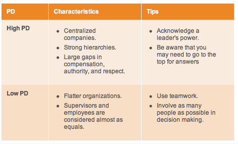
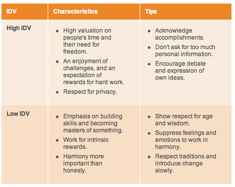
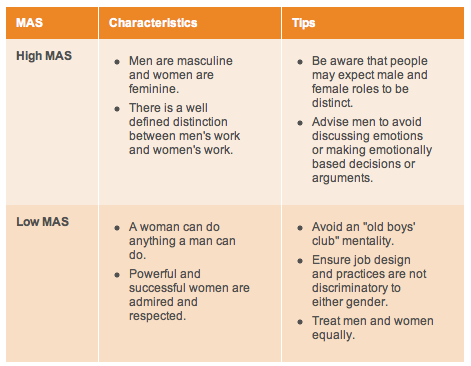
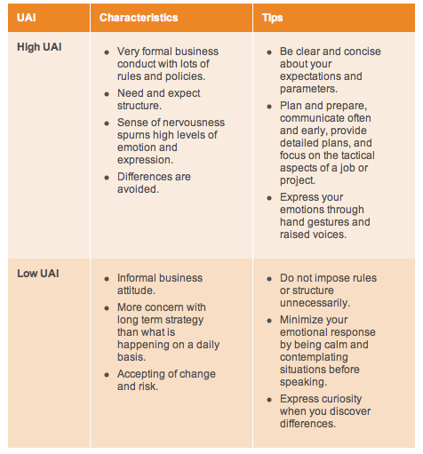
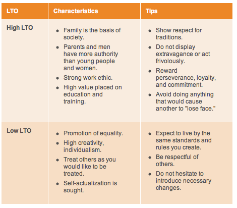

Cultural Dimensions
Perhaps one of the best ways to identify public relations campaign tactics is to identify the five cultural dimensions identified by psychologist Dr. Geert Hofstede in the 1970s. The five dimensions are Power/Distance, Individualism, Masculinity, Uncertainty/Avoidance and Long-Term Orientation. His model has become an international standard for identifying cultural dimensions. Each country receives a score of 0 to 1000 for each of the dimensions, with higher scores meaning the more that dimension is exhibited in that society (Hofstede's Cultural Dimensions, n.d.). The Power/Distance dimension measures the degree of inequality that exists and is accepted among people with and without power, according to Mindtools.com. A high Power/Distance score suggests the society accepts an unequal balance of power and people know "their role" in the system. Lower Power/Distance scores suggest that power is evenly dispersed and individuals see themselves as equals.
Examples of a country with a high Power/Distance score would be Malaysia. In Malaysia, it would be likely that reports would only be sent to top management and have closed-door meetings with only select leaders in attendance. It's important to understand this dimension when working internationally in order to have successful employee relations. 
The individualism dimension measures the strength of ties individuals have with others within their community. High scores in this dimension indicate loose ties with others and little sharing of responsibility beyond a select small circle. Low Individualism scores indicate group cohesion and a large amount of loyalty for members of the group.
An example of a collectivist society would be China. This country values harmony and duty. Additionally, collectivist societies tend to stress the importance of cohesion within social groups over their individual goals, often focusing on family, community, society, or country. On the other end of the spectrum are individualistic societies, such as the United States and Great Britain. In these types of societies, culture is oriented around the self. Additionally, high emphasis is placed on personal achievement. 
The Masculinity dimension measures how much the society follows traditional male and female roles. In countries with high masculinity scores, men are expected to be tough, to play the role of provider. Women are more submissive and hold jobs separate and considered lower than their male counterparts. In countries with a low Masculinity score, the roles are not reversed rather they are blurred.
Countries scoring high in the Masculinity dimension include Japan. In these types of cultures, employee relations would go smoother if the CEO is a male. Conversely, Sweden scores low in Masculinity. In Sweden, operations would run smoother with a more balanced team based on skill, rather than gender. 
The fourth dimension, Uncertainty/Avoidance is the level of anxiety when in uncertain situations. Countries with high Uncertainty/Avoidance try to avoid uncertain situations and are more comfortable with set rules and regulations. Countries with lower Uncertainty/Avoidance suggest the society is comfortable with new approaches and unfamiliar situations. In these societies, individuals are encouraged to follow their own set of rules.
When creating a crisis plan, it is critical to weigh the country's Uncertainty/Avoidance score when creating the instructions. In a country like Belgium, with a high Uncertainty/Avoidance score, it is best to offer a limited number of choices with a very high level of detail. 
The final dimension of Hofstede's model is Long-Term Orientation. This dimension measures the level of value placed on long-standing traditions versus short-term values.
The United States has a low Long-Term Orientation. This indicates that the individuals do not place high value on tradition and are open to innovative ideas.
References
America, J. (2013, September 19). Coca-Cola Apologizes for Offensive Bottle Cap. ABC News. Retrieved November 28, 2013, from http://abcnews.go.com/Lifestyle/coca-cola-apologizes-offensive-bottle-cap/story?id=20308898CIPR. (n.d.). Global Public Relations Campaign – case study. Retrieved November 28, 2013, from http://www.cipr.co.uk/content/events-awards/excellence-awards/results/12-global-public-relations-campaign/case-study
http://www.endpolio.org/
Google Express attracts attention; Walmart closes 3 stores in China. (2013, March 29). Business, Political, and Cultural News in Fort Smith and Northwest Arkansas. Retrieved November 28, 2013, from http://www.thecitywire.com/node/27095#.Up
Hofstede's Cultural Dimensions. (n.d.). - Leadership Training from MindTools.com. Retrieved November 28, 2013, from http://www.mindtools.com/pages/article/newLDR_66.htm
Kelly, K. (2012, August 23) Public Relations Theory Lecture. University of Florida